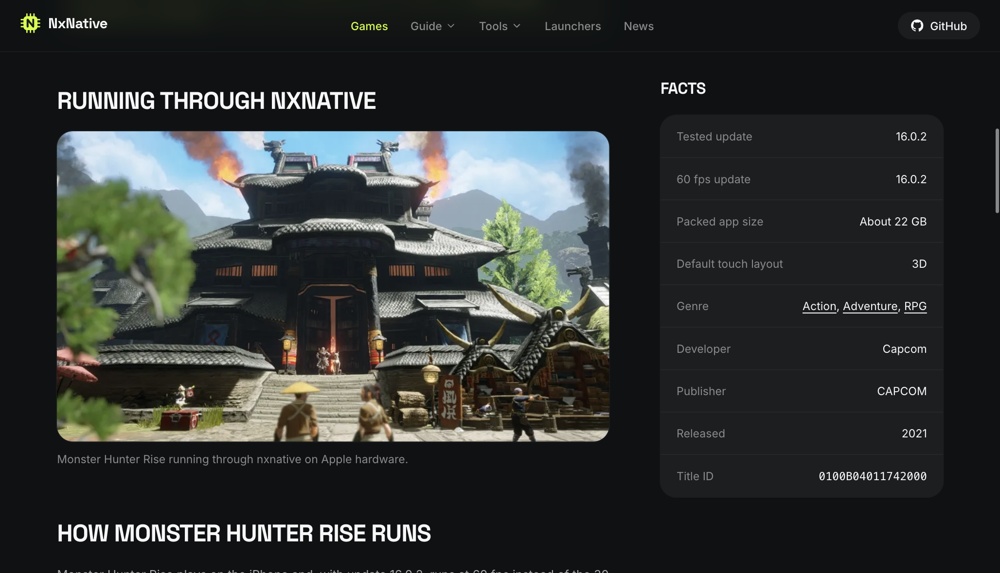
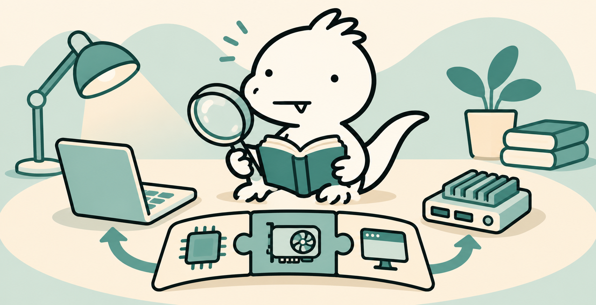
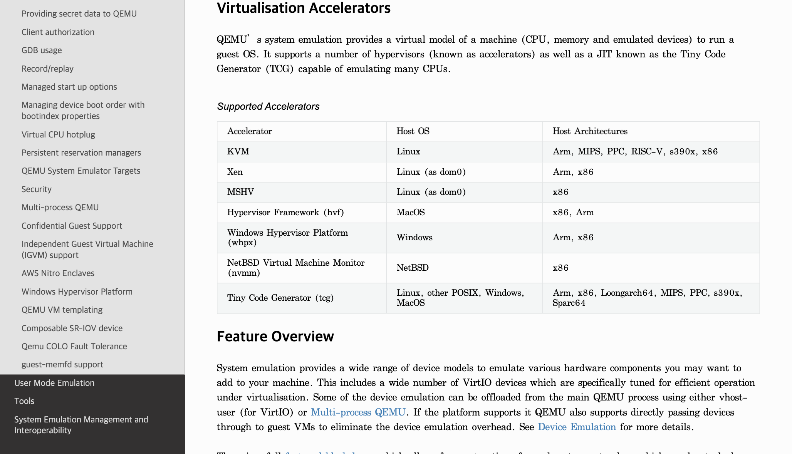
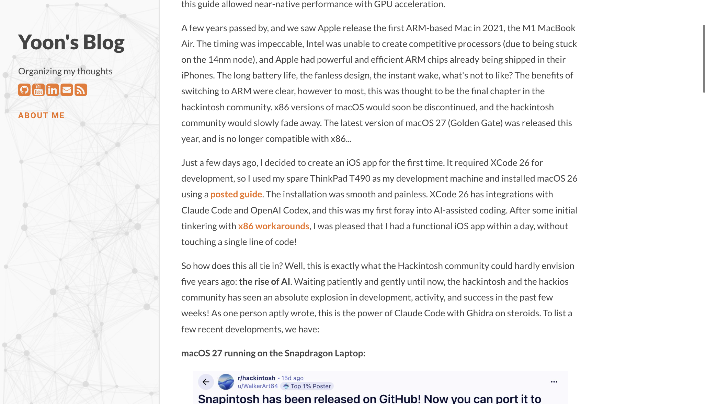
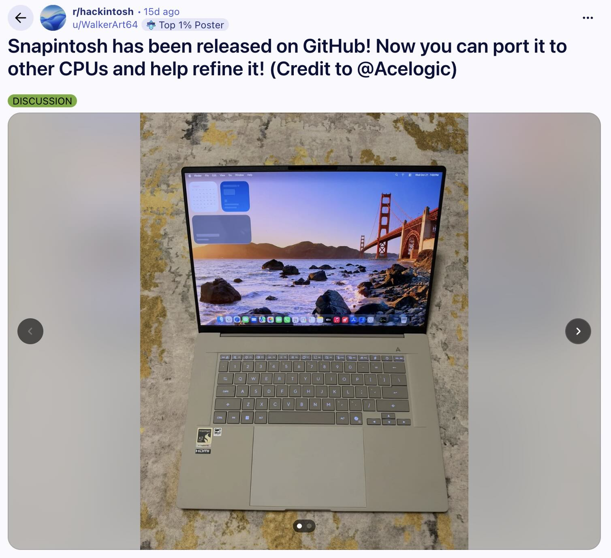
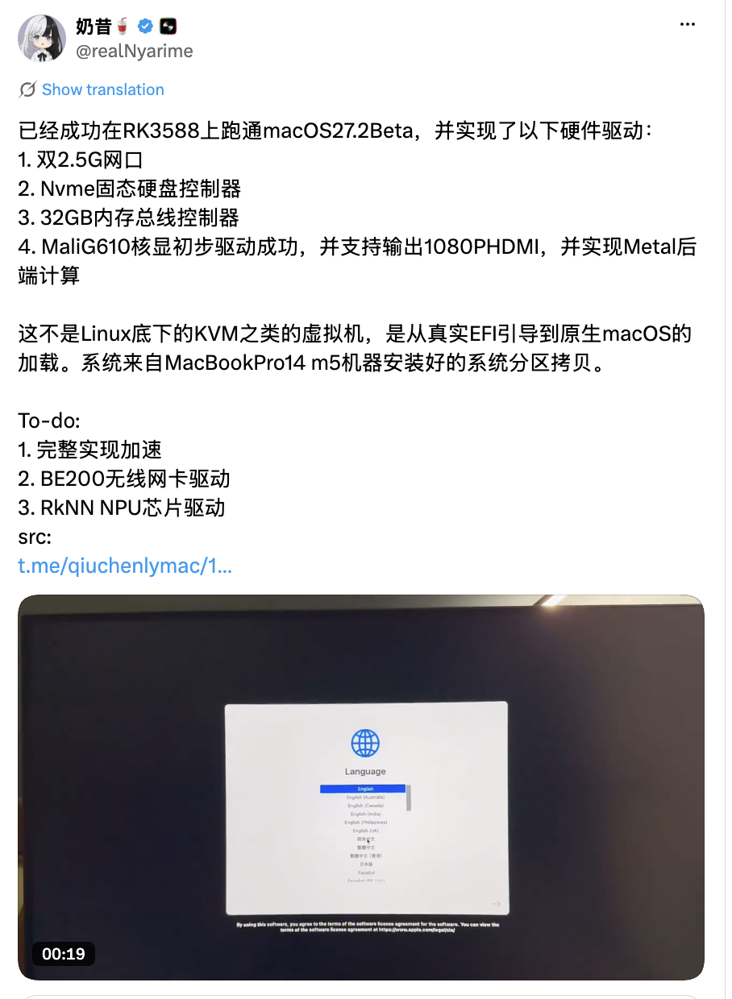
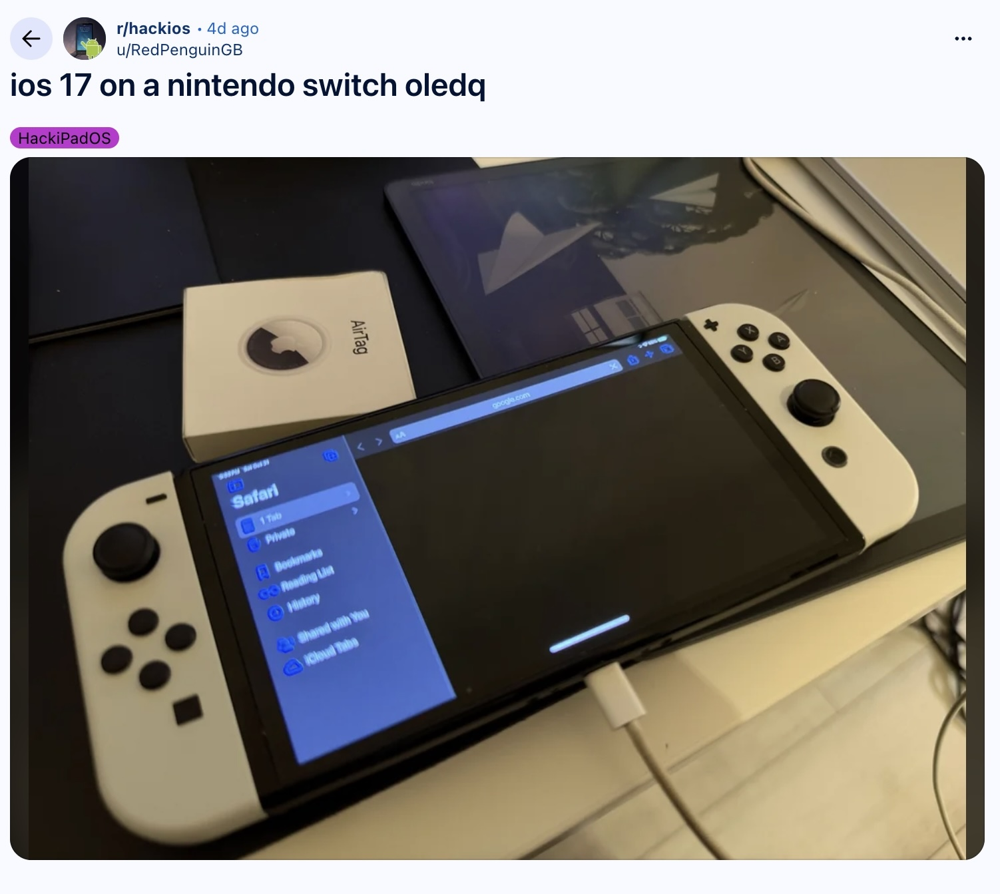
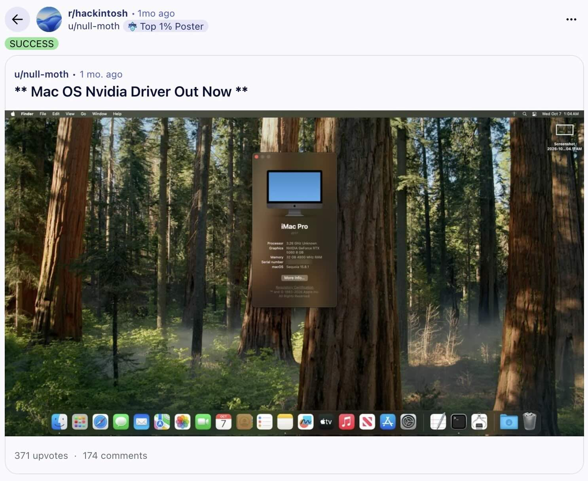

스위치 게임이 맥에서 돌아간다고?
AI와 해킨토시 열풍, 확인된 사실부터
스위치 게임을 애플 기기에서 실행하려는 프로젝트와 비애플 기기에 macOS를 올리는 해킨토시가 다시 관심을 받고 있습니다. 두 실험은 흥미롭지만 같은 기술은 아닙니다. 2026년 11월 6일 확인한 프로젝트 문서와 원문을 기준으로 구분했습니다.
몬스터 헌터 라이즈, 60FPS라는 숫자의 조건
nxnative의 프로젝트는 스위치 게임의 실행 파일을 변환하고, 운영체제 기능과 그래픽 호출을 호환하는 방식으로 애플 기기에서 실행하는 실험입니다. 비공식 게임 정보 페이지는 몬스터 헌터 라이즈 업데이트 16.0.2에서 60FPS를 보고합니다. 페이지 스스로 비공식이라고 밝힙니다.
이것은 해당 페이지의 보고이지, 모든 기기·장면에서 고정 60FPS라는 뜻은 아닙니다. 우리는 게임을 직접 실행하거나 프레임을 측정하지 않았습니다. 기존 글의 스위치 2 신작별 프레임, 발열·메모리 수치와 전 구간 완벽 구동 주장은 개별 원본을 확인하지 못해 뺐습니다.

예전 해킨토시와 지금: 무슨 일이 달라졌나
인텔 맥과 일반 PC가 같은 x86 계열 CPU를 쓰던 시절, 사람들은 일반 PC에서 macOS를 부팅하려고 부트로더와 하드웨어별 드라이버를 조합했습니다. CPU가 같아도 펌웨어와 그래픽·와이파이 같은 장치는 달랐기 때문입니다. 켜지는 것과 매일 안정적으로 쓰는 것은 또 다른 숙제였죠.
애플은 2020년 M1을 발표하며 맥의 CPU 전환을 시작했습니다. 기존 x86 PC에 새 맥 OS를 올리는 길은 더 복잡해졌지만, ARM 기기가 넓게 보급되면서 다른 가능성도 주목받습니다. 다만 해킨토시, 스위치 게임 호환, 가상화는 서로 다른 프로젝트이고 같은 기술이 부활했다고 묶을 수는 없습니다.
아이폰 3가 나왔을 무렵, iOS를 탈옥하고 맥도 만져봤던 기억이 있습니다. 정확히 어느 기종이었는지, 맥에서 해킨토시를 직접 설치해 썼는지는 기억이 흐릿합니다. 그래서 당시의 세부 경험을 단정할 수는 없지만, 이번 소식은 기기가 원래 허용한 범위 너머를 궁금해하던 그 시절을 떠올리게 합니다. 예전과 달라진 건 AI라는 조수가 생겼다는 점이고, 여전히 남은 질문은 결과가 얼마나 안정적으로 작동하는지입니다.
CPU가 같아도 나머지 퍼즐이 남는다
스위치와 Apple Silicon 기기는 ARM 계열 CPU를 사용하지만, CPU 명령어가 비슷하다고 앱이 저절로 실행되지는 않습니다. 운영체제 인터페이스, 그래픽 API, 메모리와 기기 기능을 연결하는 작업이 필요합니다. 옷만 갈아입히면 끝나는 파티는 아니었네요.

- nxnative: 프로젝트는 실행 코드 재작성, Horizon 호환 기능 및 NVN→Metal 그래픽 변환을 설명합니다. 프로젝트 문서
- QEMU/KVM 가상화: QEMU가 가상 머신과 장치를 모델링하고, Linux에서 KVM을 가속기로 사용할 수 있습니다. 모든 QEMU 실행에 KVM이나 GPU 패스스루가 필요한 것은 아닙니다. QEMU 공식 문서
- 실제 하드웨어 부팅: 비애플 PC에서 macOS를 직접 부팅하는 해킨토시는 가상 머신과 구분해야 합니다. 기기별 부트로더와 드라이버 문제가 따릅니다.

AI는 유능한 조수일 수 있다. 증거까지 대신 만들지는 못한다
Yoon의 원문에서 저자는 기존 가이드로 ThinkPad T490에 macOS 26을 설치한 뒤, Xcode의 AI 코딩 도구를 활용해 하루 안에 iOS 앱을 만들었다고 말합니다. 이는 저자의 앱 제작 경험입니다. 본문은 네 가지 드라이버가 AI만으로 개발됐다는 증거나 개발 시간을 제시하지 않습니다.
역공학에서 AI는 분석 단서와 코드 초안을 제안할 수 있지만, 결과가 맞는지는 실행·비교·사람의 검증이 필요합니다. AI가 모든 드라이버를 며칠 만에 뚫었다거나 최근 성과의 유일한 원인이라는 기존 표현은 확인할 수 없어 삭제했습니다.

원문이 보여준 네 장의 사진, 어디까지 말할 수 있을까?
원문은 Snapdragon 노트북의 macOS 27, RK3588 보드의 macOS 27.2 베타, Switch OLED의 iOS 17, NVIDIA 50 시리즈 지원 사례를 이미지와 함께 소개합니다. 이들은 원문 저자가 소개한 커뮤니티 사례이며 저자 자신의 T490 테스트 결과가 아닙니다.




사진만으로 장치의 모든 부품이나 가속 상태, 장시간 안정성, VM 사용 여부를 확정하기 어렵습니다. 기존의 Mali Metal 연산 성공, 정확한 칩 모델과 파티션 이식, 스위치의 사파리 실제 작동 같은 세부 주장은 각 최초 제작자의 독립적인 근거를 확인하지 못해 삭제했습니다. 원문 이미지는 원문에서 직접 확인할 수 있습니다.
재미있는 데모와 내 메인 장비는 별개다
실험용 부트로더와 드라이버는 부팅 실패나 데이터 손실을 일으킬 수 있습니다. nullmoth 문제 해결 문서도 Ryzen 기기의 설치 중 멈춤과 복구 방법을 다룹니다. 다만 기존에 적었던 특정 AM5 BIOS의 영구 벽돌 사고와 그 원인은 이번에 입증하지 못해 삭제했습니다.
상용 게임 파일과 복호화 키, 운영체제 사용에는 저작권·기술적 보호조치와 라이선스 문제가 얽힙니다. 허용 범위는 행위와 관할에 따라 달라지므로 일률적으로 합법·불법을 단정하지 않습니다. 이 글은 구동 방법이나 파일 확보를 권유하지 않고, 기술과 공개된 사례를 살펴봅니다.
그래서 우리는 뭘 배울까?
호환성은 CPU 하나가 아니라 경계의 문제입니다. 업무에서도 오래된 사내 프로그램을 새 환경으로 옮길 때는 화면이 켜졌는지만 보지 말고, 파일 입출력·인증·주변 장치·장애 복구까지 목록으로 확인해야 합니다. 데모 성공은 출발선이지 운영 승인 도장은 아닙니다.
AI의 속도와 검증의 속도는 별개입니다. AI가 코드를 제안하면 작은 테스트부터 실행하고, 실패 조건과 복구 방법을 기록해야 합니다. 나중에 같은 질문을 던졌을 때 재현할 수 있어야 지식이 됩니다.
우리가 놓치기 쉬운 질문
- 부팅이나 한 장면의 성공 이후 업데이트·절전·저장·보안까지 실제로 유지되는가?
- 기기와 게임 버전, 테스트 시간, 실패 사례가 공개되어 있는가? 성공한 사람만 보이는 건 아닌가?
- AI가 한 일과 기존 커뮤니티의 축적, 사람이 검증한 부분을 구분했는가?
- 흥미로운 실험의 비용과 권리 문제를 감안해도 내가 해결하려는 문제에 쓸 가치가 있는가?
내 판단: 이 변화에서 배울 것은 ‘뭐든 뚫린다’가 아니라, 옮기고 싶은 기능의 경계를 나누고 검증할 줄 아는 능력입니다. 오래된 장비를 살릴 가능성은 커졌지만, 결과를 유지할 책임과 선택은 여전히 사람에게 있습니다.
확인한 출처
- Yoon’s Blog: The Hackintosh Reborn… with AI — 원문과 저자의 경험
- seedds/nxnative — 변환 방식과 프로젝트 설명
- 비공식 nxnative 게임 정보 — 몬헌 16.0.2와 60FPS 보고
- Apple M1 발표 (2020) — 전환의 시점
- QEMU 공식 문서 — 가상화·에뮬레이션 설명
- nullmoth 문제 해결 문서 — 알려진 문제와 복구
확인일: 2026년 11월 6일. 직접 게임이나 해킨토시를 실행한 테스트가 아닌 공개 자료 검토입니다. 자료 화면은 출처 확인용으로 수록했으며 실제 게임 플레이를 검증하는 사진은 아닙니다.
글과 벨로키 삽화: CC BY-NC-ND 4.0. 인용 화면·상표·게임 이미지의 권리는 해당 권리자에게 있습니다.